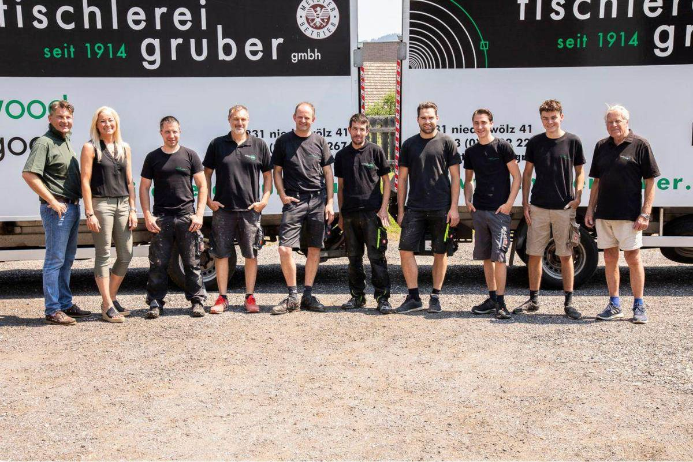
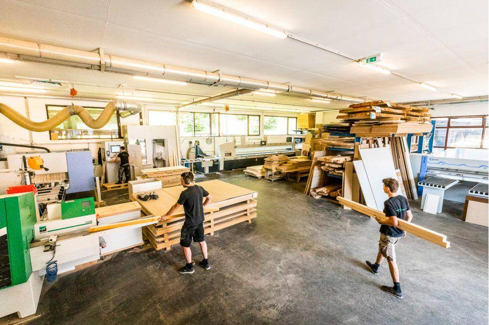
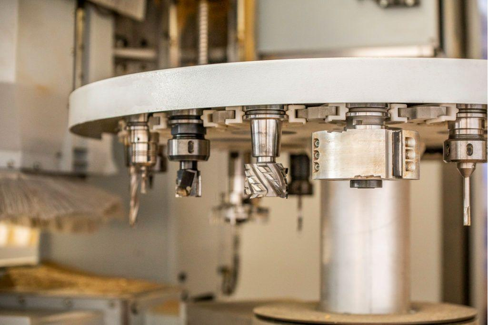
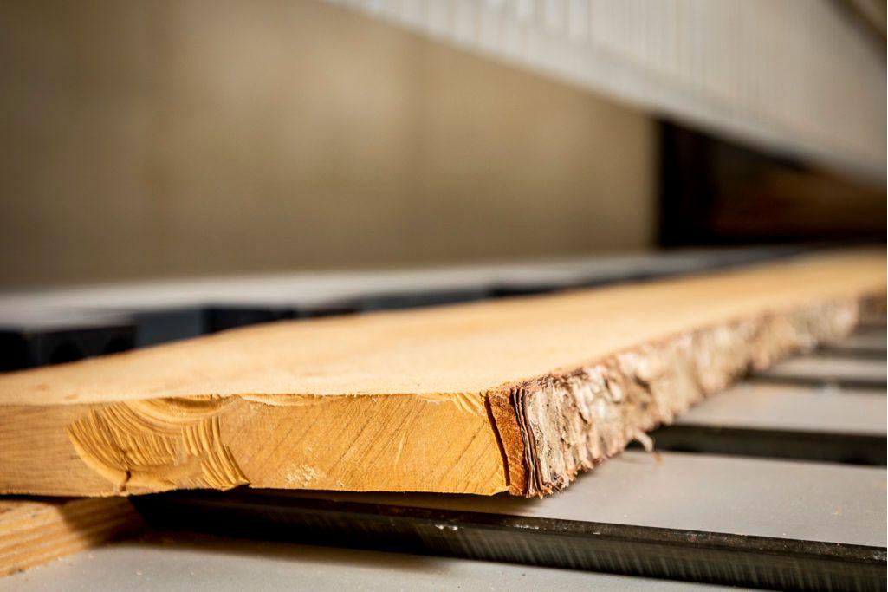
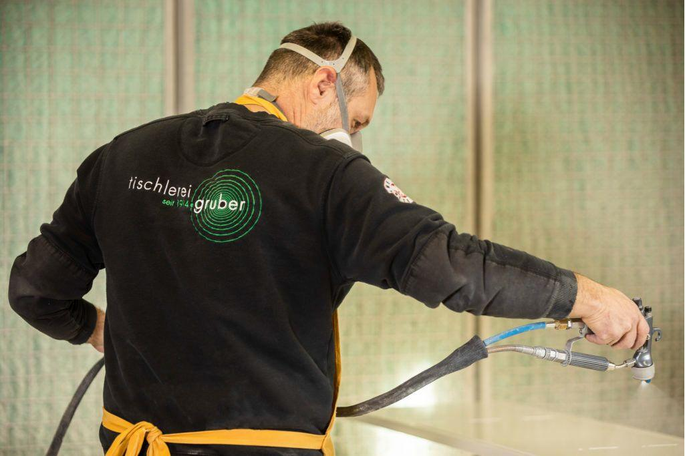

Über uns & Team
Familienbetrieb in Niederwölz – seit 1914
Was als kleiner Handwerksbetrieb begann, ist heute ein Betrieb, in dem viele Tischler und Lehrlinge arbeiten. Wir führen ihn in 4. Generation.

Die Chefleute
Sigrun Gruber und Albert Brunner führen die Tischlerei Gruber GmbH. [Je ein Satz: wer macht was, z. B. Planung, Büro, Werkstatt]
[FOTO: Porträt Sigrun Gruber und Albert Brunner]
Unsere Geschichte
- 1914Gründung der Tischlerei Gruber [Ort der Gründung bestätigen]
- [Jahr][Meilenstein: 2. / 3. Generation, neue Werkstatt …]
- Heute4. Generation, Meisterbetrieb, Büroeinrichtungen bis nach Wien
Die Werkstatt
Zuschnitt, CNC-Bearbeitung und Lackierraum in der eigenen Werkstatt. [Fläche / Maschinen vom Kunden, falls gewünscht]



